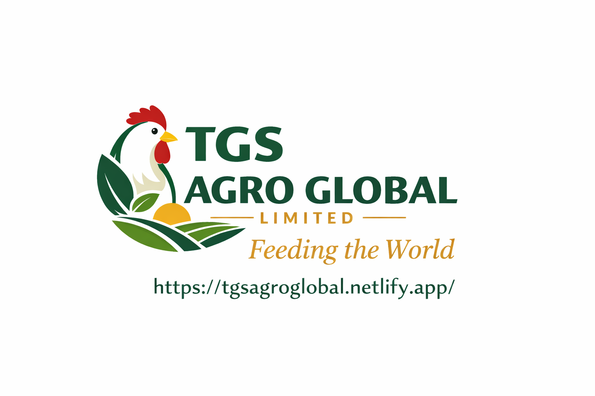

TGS AGRO GLOBAL LIMITEDSmart farming solutions and agritech services across Nigeria.
Get StartedTGS AGRO GLOBAL LIMITED delivers modern agricultural solutions, professional farm consultancy, and technology-driven farming systems.
Professional farm planning and agribusiness support.
Technology-powered systems for higher productivity.
Empowering farmers with modern agricultural skills.
Lagos, Nigeria
Phone: 08057388145
Email: info@tgsagroglobal.com